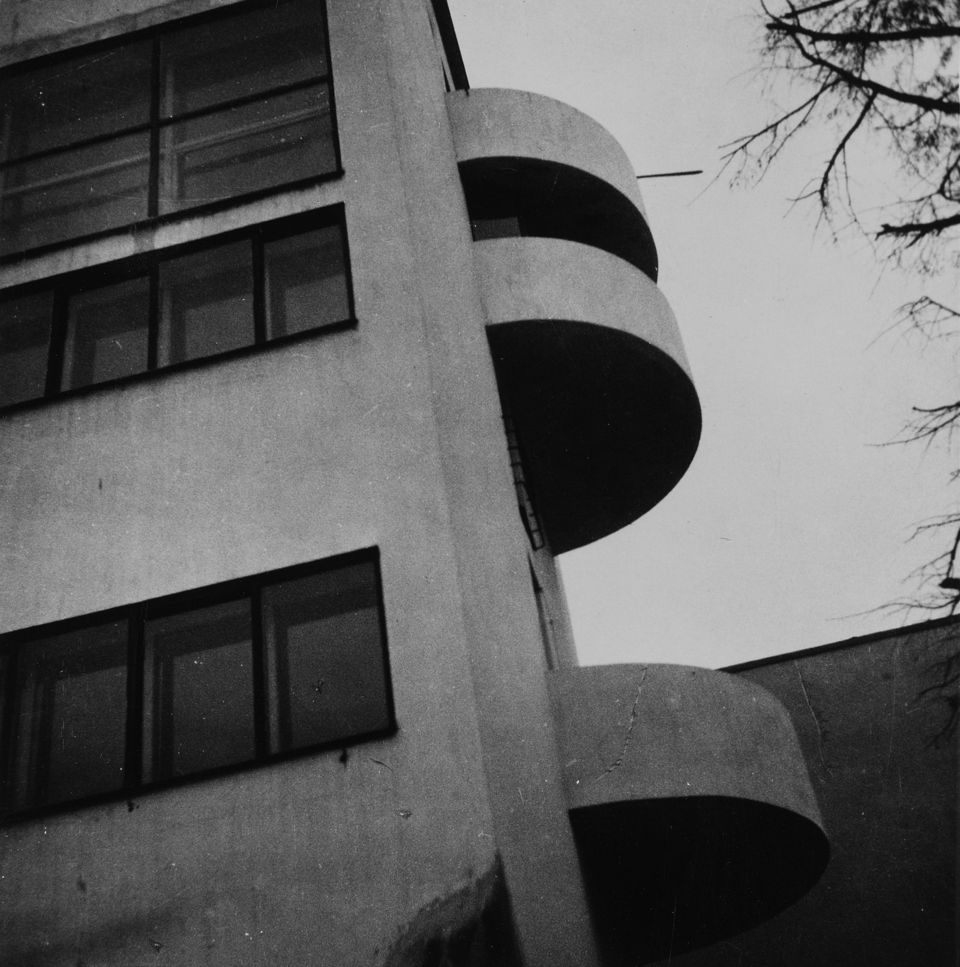

Дом Наркомфи́на — один из знаковых памятников архитектуры советского авангарда и конструктивизма. Построен в 1928—1930 годах по проекту архитекторов Моисея Гинзбурга, Игнатия Милиниса и инженера Сергея Прохорова[2] для работников Народного комиссариата финансов СССР (Наркомфина). Автор замысла дома Наркомфина М. Я. Гинзбург определял его как «опытный дом переходного типа»[3]. Дом находится в Москве по адресу: Новинский бульвар, дом 25, корпус 1.
Работа была начата с анализа ряда типов жилья в дореволюционном, так называемом «доходном доме». Анализ показал, что этот тип жилья при всем своем культурном убожестве и известной степени удовлетворял интересам средней и мелкой буржуазии и притом давал экономический эффект более высокий, чем например массовое жилищное строительство Москвы первых лет после революции.
С 1980-х годов дом находился в аварийном состоянии, «100 главных зданий мира, которым грозит уничтожение»[4]был трижды включён в список . В 1986 начато исследование и работа над проектом реставрации дома по инициативе Владимира Гинзбурга; в 1998 году проект отмечен первой премией фестиваля «Зодчество». В 2016—2020 годах дом отреставрирован по проекту АБ «Гинзбург Архитектс». Результаты исследования и реставрации опубликованы[5][6]. Сейчас Дом Наркомфина — и памятник архитектуры, и жилой дом.
В 2021 году Музей современного искусства «Гараж» инициировал масштабное исследование Дома Наркомфина, в том числе истории жизни его создателей и обитателей на протяжении почти ста лет. Полученное знание становится основой экскурсионных маршрутов, публикаций, разнообразных публичных и просветительских проектов, выстроенных вокруг легендарного дома. Помимо этого, для жильцов дома, патронов Музея и владельцев карт GARAGE доступно кафе Дома Наркомфина, а на первом этаже жилого корпуса открылся книжный магазин.[7]
some text